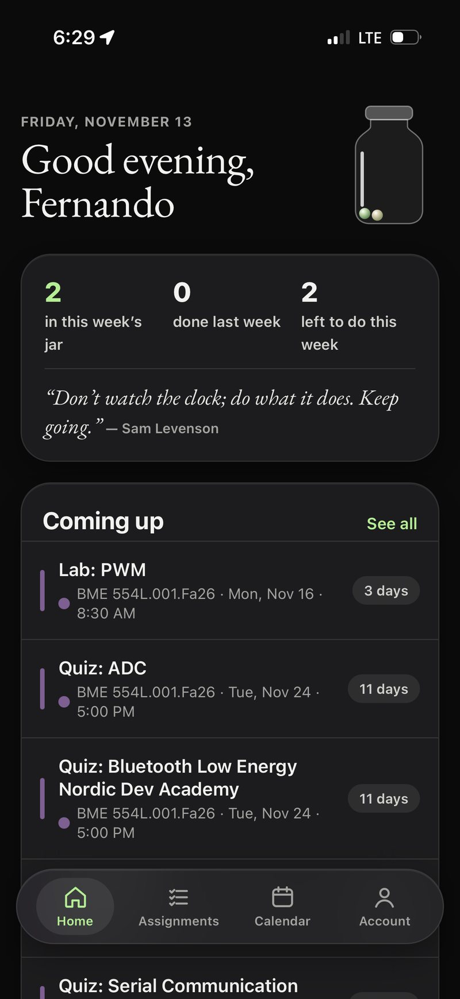
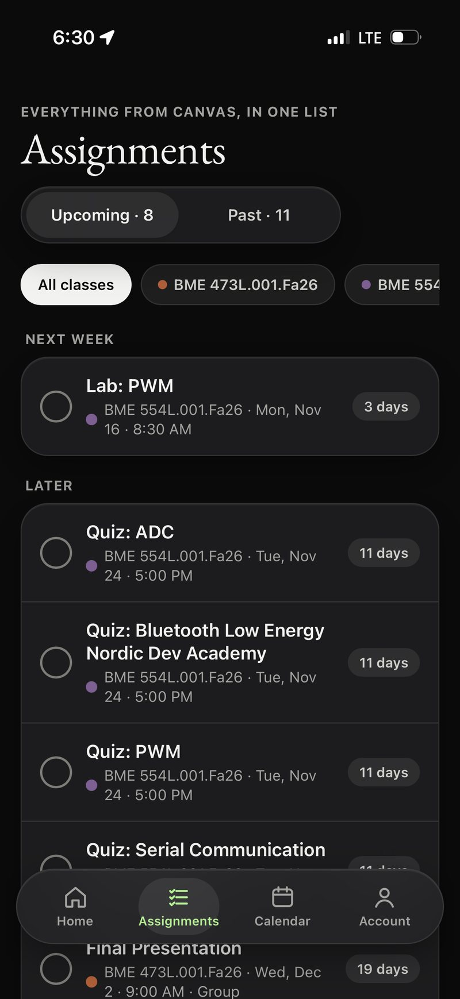
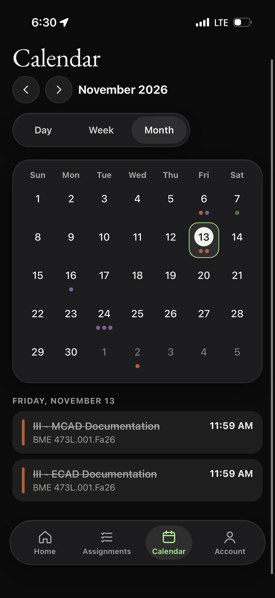
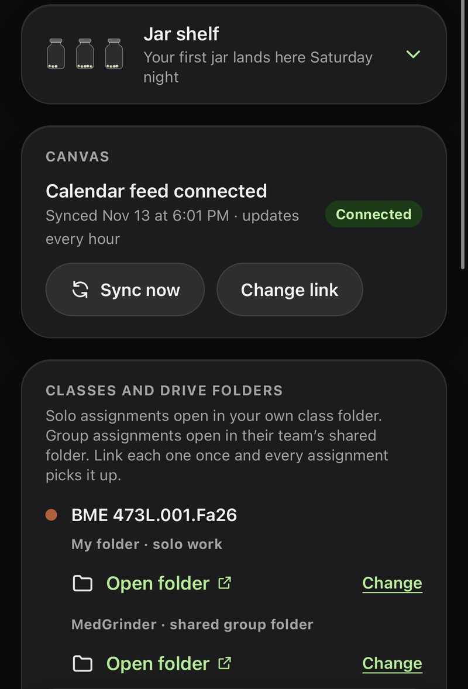

Case study · Personal project · Fall 2026
One-For-All: everything a student has due, in one place
My assignments lived in Canvas, my reminders in Apple Reminders, and my files in Google Drive. I designed an app that brings them onto one screen, prototyped it with AI, shipped it, and changed it based on what my friends told me.
TL;DR
Students have things scattered across Canvas, calendars, reminder apps, and Google Docs. I designed a web app you can install on your phone that pulls in Canvas assignments, sends reminders, and links each assignment to its Drive folder and doc. I went from idea to a live app with my real assignments in under a day, then put it in front of 3 friends and changed the home screen based on what they said.



The problem
I noticed it in my own week. Canvas has my assignments, deadlines, and descriptions, but no reminders. So I copied every deadline into Apple Reminders by hand, kept my schedule in Google Calendar, and kept my files in a Google Drive folder for each class. When a professor linked a document, Word joined the mix too. To finish one assignment and keep track of the rest, I switched between all of them.
This semester it cost me: I turned in an assignment late because I forgot to add it to my reminders.
"Students have things scattered everywhere, from canvas, to calendar, to google docs, to reminders. I want to build an app that puts everything in one place."
Before, one assignment looked like this:
- Open Canvas, find the assignment and its deadline.
- Copy the deadline into Apple Reminders, and remember to do it every time.
- Check Google Calendar to see when I can work on it.
- When it's time to work, go back to Canvas for the description.
- Open Google Drive and find the class folder.
- Create or find the Google Doc, or open the Word file the professor linked.
That's up to five apps (Canvas, Reminders, Calendar, Drive, and sometimes Word) for one assignment, and one forgotten step means a missed deadline.
Before · up to 5 apps
- Canvasassignment, deadline, description
- Apple Remindersdeadline copied by hand
- Google Calendarwhen to work on it
- Google Driveclass folder and doc
- Wordwhen a professor links a file
After · 1 app
- Deadline and description, synced from Canvas
- Reminders 24 h and 2 h before
- Class or team folder, with Create doc / Open doc
- Mark as complete, and a marble drops in the jar
Who it's for
- Me, first. I designed around my own workflow, then used the real app with my own Canvas. Using it is where many of the next features came from: group assignments, notification settings, and automatic folder linking.
- 3 friends who tested it. Seniors in biomedical engineering, like me, with the same scattered setup. They're actively using it on their phones.
I built it for myself first, but in a way that could grow to other students.
Key insight
The problem isn't missing information. Everything I need already exists. It's just in four places, so the work is the switching.
That changed what I was designing. I didn't need a better to-do list. I needed one screen where the deadline, the description, the reminder, and the file sit together, so finishing an assignment starts in one place.
Design decisions
1. One screen per assignment
Chose: an assignment page with the Canvas description, due time, linked Drive folder, a "Create doc" or "Open doc" button, and "Mark as complete" together. On a computer, the description sits on the left and the due date, doc, and complete button on the right. The computer Home list puts "Open doc" on every row, so the doc is next to the assignment.
Why: this is the insight in one screen. If you still have to leave to find the file, the scatter is back.
2. Reminders that come to you
Chose: phone notifications 24 hours and 2 hours before each deadline, an optional morning summary, and an alert when a teammate assigns you a task, each with its own switch.
Considered: a native iPhone app. A web app you install from the browser still gets real iPhone notifications without the $99 a year developer fee or App Store review, so native can come later.
Why: copying deadlines into a reminder app was the step I wanted gone.
3. Group or solo, asked once
Chose: the first time you open an assignment, it asks "Is this a group assignment?" with two answers: Just me or Group. Group work gets a team, tasks assigned to teammates with notes, and the team's shared Drive folder. Solo work opens your own class folder.
Why: some assignments are solo and some are group. Asking once lets the app pick the right folder every time after, instead of making you choose each time.
4. A weekly marble jar
Chose: a jar that gets a marble for each assignment you finish, empties on its own at the end of the week, and shakes when you tap it.
Considered: a jar that fills with liquid, and a "Collect jar" button. I chose marbles because when I was growing up, I had a jar where I collected marbles with my grandma. Collection happens on its own, so the jar is something you look back on, not one more chore.
Why: a to-do list only shows what's left. I wanted the jar to give a sense of accomplishment and a bit of inspiration: look back and you see every jar you've filled and every marble in it.
5. Calm, Apple-like look
Chose: frosted glass cards, a classic serif (EB Garamond) for the greeting, and sage green, cream, and white. The greeting comes first, then the week summary and jar, then what's coming up. Class colors were softened so they match the palette but stay easy to tell apart.
Considered: the first pass was blue and lavender. I replaced it with sage, cream, and white because they're soothing to look at: soft and earthy, but also elegant and timeless.
Why: I wanted it to feel "deluxe" and "part of the apple ecosystem," something you'd want to open.

Iterations
12 design rounds, then 5 releases of the real app.
First prototype
Four phone screens: Home, Assignment, Calendar, Account. Blue and lavender glass, a liquid jar with a collect button.
Computer layout and new look
Added a full computer layout with a sidebar and a wide list with doc links. Switched the greeting to a serif to match a reference I found, and the palette to sage, cream, and white.
The jar, four ways
A big summary card, then the jar beside the greeting, then the small summary bubble back with a daily quote, then the jar moved next to the quote on computer. I rejected a layout I didn't like, and brought back a part I'd lost along the way.
Dark mode, four rounds
Only the cards went dark, then the background went dark green, then true black with brighter sage accents, then fixes for headings and icons I couldn't see.
Real app, real data
Shipped the real app and linked my real Canvas. My assignments showed up with the right classes and times. The same afternoon I added group assignments, shared tasks, phone notifications, and personal and team folders.
Changed after testing
Home now shows only what's coming up, as a simple list without checkboxes (see feedback below).
Feedback → changes
| Who | What they said | What I did | Result |
|---|---|---|---|
| Friend testers | "Coming up" on Home shows assignments past the deadline. | Home shows only upcoming assignments. | Shipped Nov 11 |
| Friend testers | Home "feels redundant compared to the assignments tab." | Made Home's list read-only, with no checkboxes. Checking off happens in Assignments. | Shipped Nov 11 |
| Friend testers | (same) | Didn't act on it all the way, on purpose. I kept the greeting, jar, and weekly stats on Home. They aren't in the Assignments tab, and they're what make Home worth opening. | Kept on purpose |
| Friend testers | Some didn't keep a Drive folder for each class. Some kept class folders on their computer. | Not yet, on purpose. The app was built around my setup, and supporting other ways of storing files is a bigger change. It's my top next step. | Planned |
| Me, using it | I wanted group work, notification settings, and the right folder picked for me. | Built group assignments, per-reminder switches, and automatic personal or team folders. | Shipped Nov 9 |
How I used AI
I used Claude to go from an idea to a working product fast. My loop was describe → prototype → test → iterate:
- Describe. Before prototyping anything, I sat down and worked out what I wanted from the app and its core features. Then I wrote out the problem, who it was for, and every page, and set the plan: design first, then build.
- Prototype. In Claude Design, I turned my descriptions into phone and computer screens, light and dark, and changed them by saying what I wanted: a font reference, a palette, where the jar should sit.
- Test. When I decided the prototype was solid, I used Claude to build it as a real app. I set it up online myself, linked my own Canvas, and installed it on my phone so I could use it every day.
- Iterate. I kept a list of what I'd change from using it, then from my friends, and shipped those changes the same day.
I made the design calls. AI gave me options quickly. Deciding which ones were right was my job:
- Brought it back to the problem mid-design ("remember the pain point I identified"), which led to doc links next to every assignment.
- Replaced the first color scheme with my own.
- Rejected a layout I didn't like, and brought back the summary bubble when it got removed.
- Pushed dark mode through four rounds until it was true black and every heading was readable.
- Caught that the computer Calendar link opened the phone version.
- Chose what to change after testing, and what to keep.
What it changed. Each design change came back in under two minutes, so I could try the jar in four places and dark mode four ways in one evening. The real app was online the next day, which meant I could test with real users instead of just showing a prototype.
Results
After, one assignment looks like this:
- Open the app. Upcoming assignments from every class are already there. Canvas syncs on its own.
- Get a reminder 24 hours and 2 hours before the deadline. No copying.
- Tap the assignment for the description, due time, and the class or team folder.
- Tap "Create doc" or "Open doc" to work in the right folder.
- Check it off, and a marble drops into this week's jar.
- My real Canvas assignments came in correctly on the first try.
- My 3 friends used it enough to have opinions about Home and Assignments, and that feedback changed the design.
- Tracking my work went from up to five apps to one. Deadlines come in from Canvas on their own, so I no longer have to remember to copy them into a reminder app, the step that made me late this semester.
- My 3 testers are still using it on their phones.
Privacy
The app never asks for a Canvas or Google password. It reads a private Canvas calendar link that you paste in, and it links Drive folders by their links instead of signing in to Google. Passwords are stored only in scrambled form, and group work is visible only to that group's members.
What I learned and what's next
My workflow isn't everyone's
I designed around one Drive folder per class because that's how I work. Testing showed some students keep files on their computer or don't keep class folders at all. The next version needs to work for them.
Ship early to learn early
Because a real app existed the day after the idea, my friends could react to something they actually used. Their notes were about things I'd never have caught in a mockup, like past-due items on Home.
Feedback is input, not orders
"Home feels redundant" could have meant deleting Home. I fixed the part that overlapped and kept the part that made Home worth opening.
Next: my top priority is figuring out what to do for students who don't keep a Drive folder for each class. To learn more, I'm sharing it with more friends and collecting their feedback. Later: a real Google sign-in so "Create doc" puts the doc in the right folder directly, and maybe a native iPhone app.